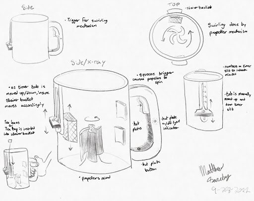
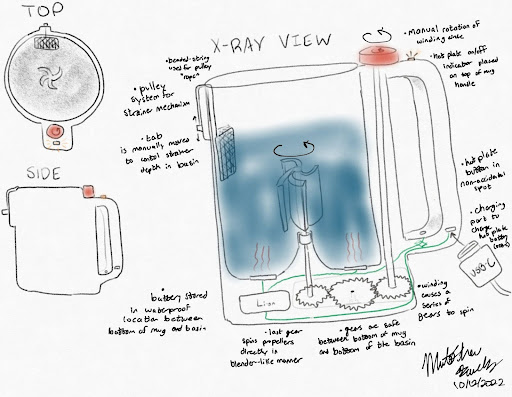
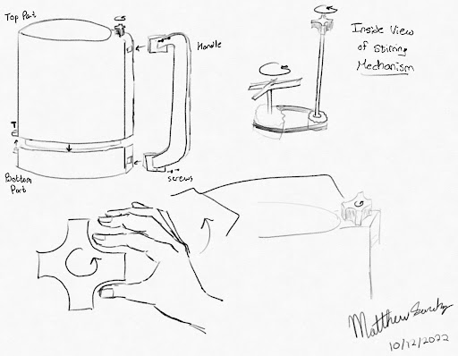

This project utilized the Human-Centered Design (HCD) process to develop a manual, knob-driven beverage container designed to prevent settling in lightly mixed drinks.

Human-Centered Design: Executed the complete HCD process (Understand, Synthesize, Ideate, Prototype, Implement) by interviewing college students to identify a specific need for preventing beverage settling. Defined the design goal to eliminate stagnant or unevenly diluted drinks like protein shakes and teas.
Mechanical Motion: Developed a manual knob-and-belt system that drives a propeller in the basin, which eliminated the need for electronic alternatives that come with charging requirements and spark hazards.
Concept Decision: Evaluated multiple design iterations, including heating plates and the use of gears, using a Pugh Matrix to select the most viable solution based on safety, performance, and ergonimics.


